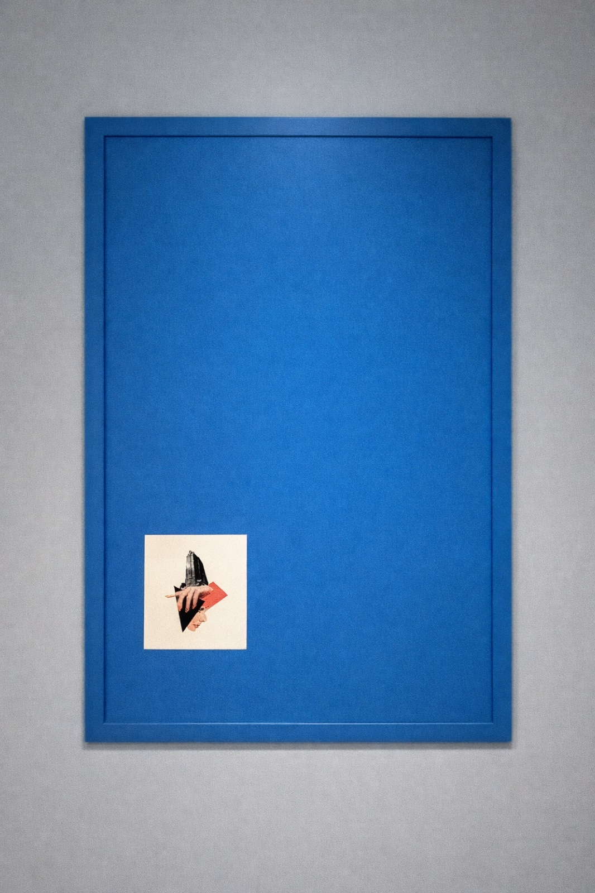
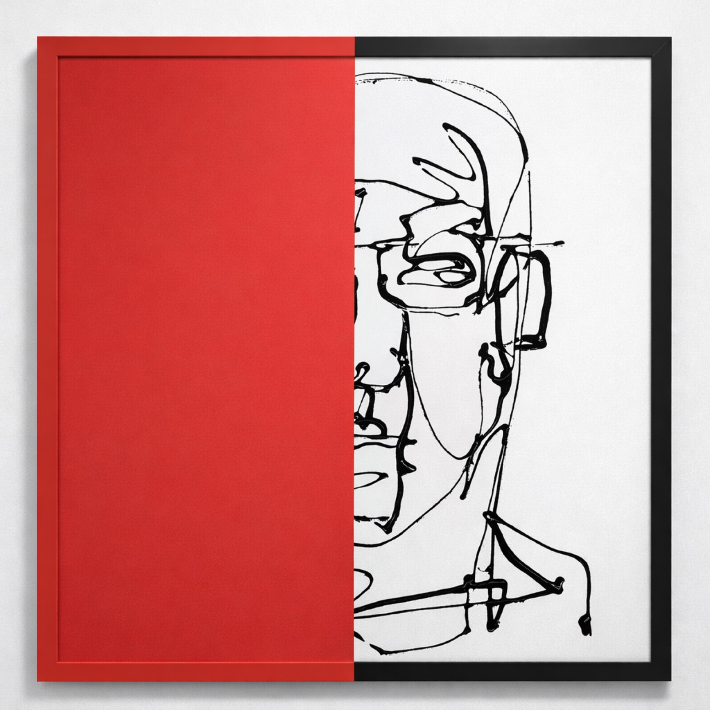
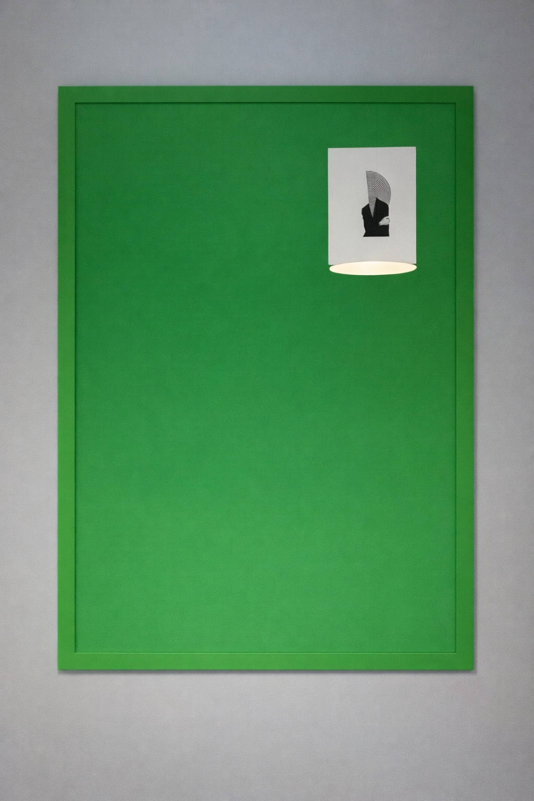
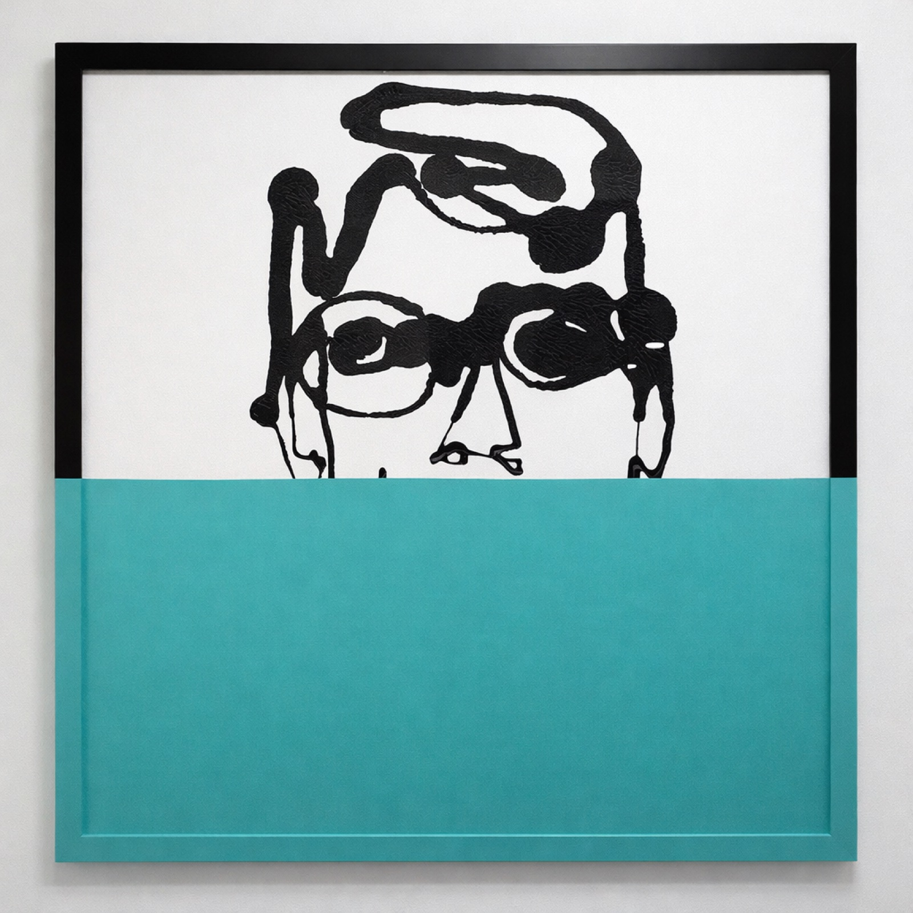
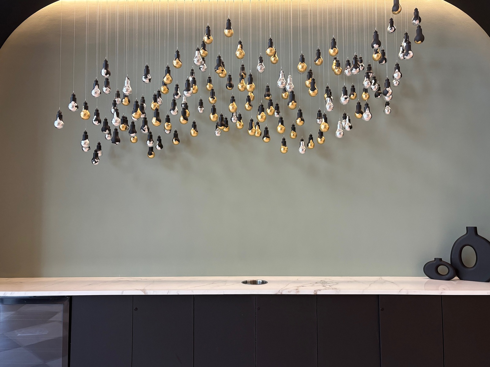
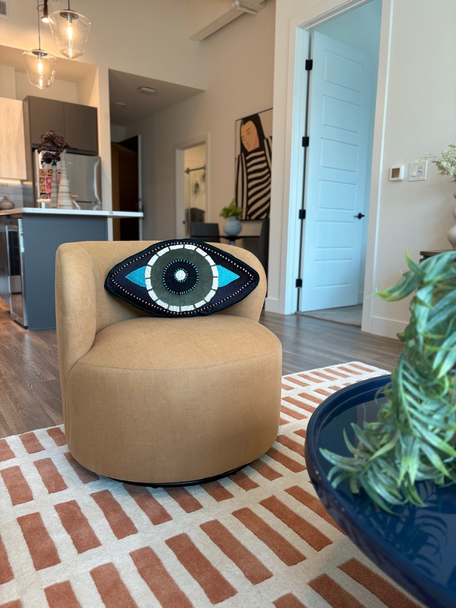
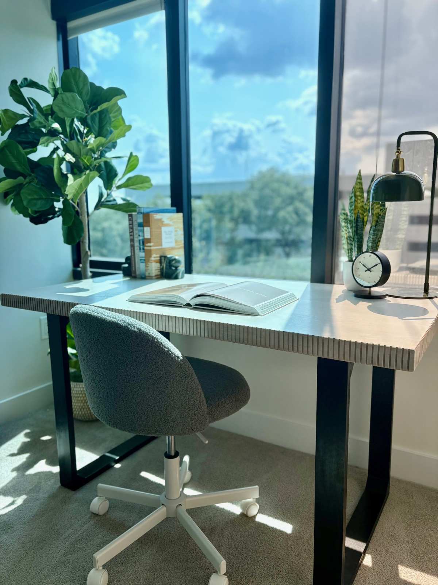
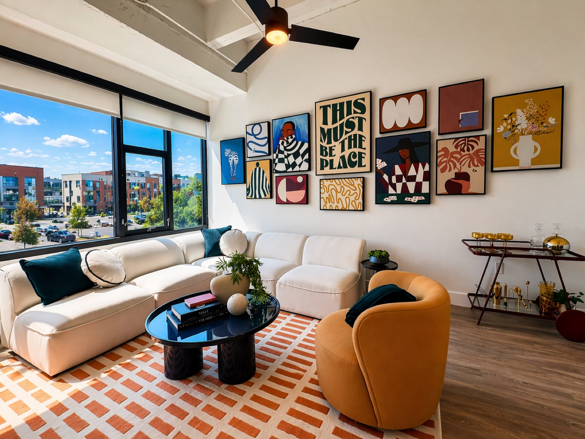
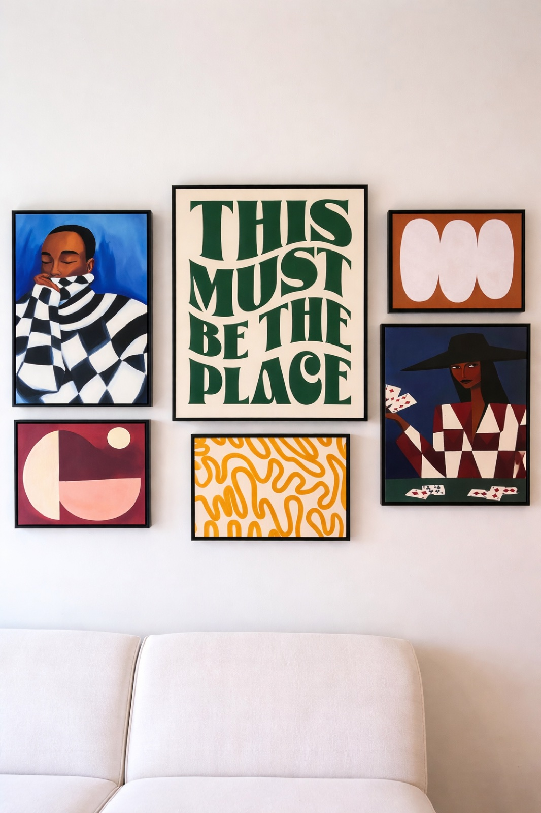

The Watt is Rachel's most expansive curation project to date, with eleven works assembled into a cohesive private collection that gives the model unit the depth and specificity of a home that has been genuinely lived in and genuinely loved.
THE BRIEF
The Watt demanded a collection with range: works that could address different moods, different rooms, and different scales without losing coherence. The curation program needed to feel accumulated, the product of discerning taste over time, rather than curated in a single session.
The challenge was to make eleven distinct works speak as one voice, while preserving the individual character that makes each piece worth living with.



BUILDING THE COLLECTION
The eleven works were assembled around a tonal and emotional arc, moving from bold, high-energy pieces in the social spaces to quieter, more introspective works in the private rooms. Scale, medium, and frame choice were all considered as part of the curatorial argument.
Several works were specifically sourced to address architectural moments in the unit, including a double-height wall, a long corridor, and a bedroom alcove, turning functional necessities into opportunities for meaningful encounter with art.



THE RESULT
The Watt demonstrates what a serious curation program can do for a residential model: it transforms a beautifully designed space into something that feels genuinely inhabited, not by a generic resident, but by someone with a point of view. That specificity is what makes buyers feel seen, and what closes the gap between viewing a model and imagining a life.



